종자기사 (2016-03-06 기출문제)
1과목: 종자생산학
1. 인공교배하기 전에 제웅이 필요 없는 작물만으로 나열된 것은?
- 수박, 오이
- 오이, 토마토
- 토마토, 벼
- 콩, 보리
(정답률: 73%)

2. 다음 중 바이러스에 의해 발병하는 것은?
- 콩 오갈병
- 보리 겉깜부기병
- 벼 흰빛잎마름병
- 벼 이삭누룩병
(정답률: 65%)
3. 종자전염성 식물병으로 병원이 바이러스인 것은?
- 옥수수 맥각병
- 옥수수 노균병
- 콩 회색줄기마름병
- 오이 녹반모자이크병
(정답률: 83%)
4. 종자처리 방법 중 건열처리의 주 목적은?
- 어린 식물체의 양분 흡수 촉진
- 종자전염 바이러스 제거
- 종자의 수분흡수 증대
- 종자발아에 필요한 대사과정 촉진
(정답률: 78%)
5. 화아유도에 가장 효과가 큰 광파장은?
- 430nm
- 550nm
- 660nm
- 730nm
(정답률: 75%)
6. 종자 휴면의 진정한 의미는?
- 양·수분의 흡수불능으로 생육의 쇠퇴현상이다,
- 발아에 적당한 조건이 갖추어져도 발아하지 않는 상태이다.
- 일사량 부족으로 인한 휴식현상이다.
- 차세대의 번식을 위한 양분저장을 위한 휴식현상이다.
(정답률: 79%)
7. 다음 중 보리 종자의 수확 및 탈곡시 기계적 손상을 최소화 할 수 있는 수분함량은?
- 10%
- 15%
- 20%
- 25%
(정답률: 55%)
8. 종자의 표준발아검사시 치상하는 종자수와 반복수를 바르게 나타낸 것은?
- 50 립씩 2반복
- 50 립씩 4반복
- 80 립씩 2반복
- 100 립씩 4반복
(정답률: 88%)
9. 다음 종자구조 중 난과식물에서 그 형태를 찾아볼 수 없을 정도로 퇴화한 것은?
- 종피
- 주심
- 배유
- 배
(정답률: 64%)
10. 다음 중 타가수정 작물에 많은 생리현상이 아닌 것은?
- 웅예선숙
- 자예선숙
- 이형예현상
- 폐화수정
(정답률: 85%)
11. 채종재배 시 식물 영양에 대한 설명으로 옳은 것은?
- 엽채류나 근채류의 채종재배 시 비배관리는 일반 재배와 별 차이가 없다.
- 채종재배 시 질소를 일찍 끊을수록 개화 및 채종기가 빨라지는 경향이 있다.
- 채소 중에서 무, 배추, 양배추 및 셀러리 등은 미량요소로서 망간을 많이 요구한다.
- 오이, 호박 및 가지 등의 채종재배 기간은 전체 재배기간에 비하여 매우 짧다.
(정답률: 60%)
12. 종자의 후숙에 대한 설명으로 맞는 것은?
- 층적처리는 종자를 건조 및 저온조건에서 처리한다.
- 건조로 후숙시는 높은 온도와 습도조건에서 처리한다.
- 인삼 종자는 후숙기간(1개월 미만)이 짧다.
- 후숙은 완전한 형태의 종자로 성숙시킨다.
(정답률: 79%)
13. 밀 종자의 테트라졸리움(tetrazolium) 검사에서 발아능이 가장 좋은 종자의 상태는?
- 배가 착색되지 않은 종자
- 배가 청색으로 착색된 종자
- 배가 붉은색으로 착색된 종자
- 배가 엷은 분홍색으로 착색된 종자
(정답률: 82%)
14. 종자의 수확에 대한 설명으로 옳지 않은 것은?
- 수확기의 결정에는 종실의 수분 함량이 중요하다.
- 적기보다 수확을 빨리하면 미숙립의 손실이 많아진다.
- 적기보다 늦게 수확하는 것이 건조가 잘 되어 탈곡제조 과정의 손실을 방지할 수 있다.
- 수확기는 수확과 건조과정에서의 강우를 회피해야 하므로 기상조건도 고려되어야 한다.
(정답률: 84%)
15. 다음 중 종자의 발아억제에 관여하는 물질은?
- abscisic acid
- auxin
- cytokinin
- gibberellin
(정답률: 84%)
16. 피자식물 종자의 핵형구성이 옳은 것은?
- 배유 = 2n, 배=2n, 종피 =2n
- 배유 = 2n, 배=3n, 종피 =n
- 배유 = 3n, 배=2n, 종피 =n
- 배유 = 3n, 배=2n, 종피 =2n
(정답률: 71%)
17. 자가불화합계통 채종 시 수분방법이 알맞게 짝지어진 것은?
- 뇌수분 : 인공수분
- 개화수분 : 인공수분
- 노화수분 : 자연수분
- 자가수분 : 자연수분
(정답률: 83%)
18. 단위결과를 유기하는 방법인 것은?
- 뇌수분
- 여교잡
- 인공수분
- 착과제 처리
(정답률: 63%)
19. 순도검사의 시료에 종자 크기가 반절 이상인 발아립(發芽粒)이 섞여있다면 이는 어느 범주에 속하는가?
- 이물
- 이종종자
- 잡초종자
- 정립
(정답률: 80%)
20. 단자엽식물 종자가 발아할 때에 가수분해효소의 방출이 이루어지는 곳은?
- 호분층
- 배
- 배유
- 배축
(정답률: 80%)
2과목: 식물육종학
21. 다음 중 유전상관에 관한 설명으로 옳은 것은?
- 유전상관의 값은 두 형질의 유전공분산과 환경분산을 이용해 구한다.
- 유전상관은 유전자간의 연관과 다면발현성에 기인한다.
- 유전상관의 값은 변동이 심하여 육종상 이용이 불가능하다.
- 일반적으로 유전상관의 값은 표현형 상관보다 낮으며 세대에 따라 달라진다.
(정답률: 56%)
22. 경지잡초 가운데서 선발하여 재배식물로 된 작물로만 짝지어진 것은?
- 완두, 호밀
- 벼, 보리
- 벼, 완두
- 옥수수, 벼
(정답률: 55%)
23. 넓은 의미의 유전력을 바르게 나타낸 것은?(VG:유전분산, VE:환경분산, VP:표현형분산)
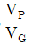
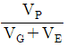
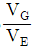
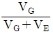
(정답률: 68%)
24. 수정하지 않은 난세포가 수분작용의 자극을 받아 배로 발달하는 것은?
- 위수정생식
- 복상포자생식
- 무포자생식
- 부정배생식
(정답률: 60%)
25. 후대로 유전하지 않는 변이는?
- 돌연변이
- 유전자변이
- 방황변이
- 교잡변이
(정답률: 73%)
26. 다음 중 제1감수분열 전기에 일어나는 5단계로 옳은 것은?
- 세사기→대합기→이동기→태사기→이중기
- 세사기→대합기→태사기→이중기→이동기
- 이동기→세사기→대합기→태사기→이중기
- 이동기→대합기→태사기→세사기→이중기
(정답률: 70%)
27. 유전적 침식의 원인과 거리가 먼 것은?
- 작물재배의 기계화와 육성품종의 상업화가 되어 작물재배가 가속화 된다.
- 산림개발에 의해 식생이 파괴되고 품종이 획일화된다.
- 지구 온난화에 따른 사막화 등의 환경변화로 생태계가 파괴된다.
- 다양한 재래종의 재배에 의해 수량이 감소된다.
(정답률: 65%)
28. 야생식물이 재배화되면서 순화한 특성은?
- 종자산포 능력 강화
- 식물의 방어적 구조 강화
- 종자발아의 균일성 약화
- 종자의 휴면성 약화
(정답률: 76%)
29. 다음 중 ( )에 알맞은 것은?
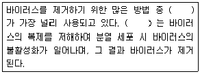
- 옥신처리
- 지베렐린처리
- 고온처리
- 저온처리
(정답률: 75%)
30. 다음 중 열성상위의 F2의 분리비는?
- 9:7
- 15:1
- 9:3:4
- 9:6:1
(정답률: 54%)
31. 파지의 유전연구에 이용되고 있는 돌연변이에 해당하지 않는 것은?
- 기주범위 돌연변이체
- 용균반형 돌연변이체
- 겸상적혈구 돌연변이체
- 조건치사 돌연변이체
(정답률: 55%)
32. 십자화과 채소에서 자식시킬 수 있으며, 자가불화합성인 계통을 유지할 수 있게 하는 방법은?
- 타가수분
- 뇌수분
- 종간교잡
- 근계교배
(정답률: 76%)
33. 다음 중 여교배 세대에 따라 반복친을 나타낼 때 BC4F1에 해당하는 반복친은 약 몇 %인가?
- 75.0
- 87.5
- 93.8
- 96.9
(정답률: 57%)
34. 다음 중 (가), (나)에 알맞은 것은?
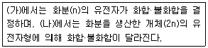
- 가: 포자체형 자가불화합성
나: 배우체형 자가불화합성 - 가: 배우체형 자가불화합성
나: 포자체형 자가불화합성 - 가: 유전자적 웅성불임성
나: 세포질적 웅성불임성 - 가: 세포질적 웅성불임성
나: 유전자적 웅성불임성
(정답률: 58%)
35. 목표로 하는 전체 형질에 대하여 동시에 선발할 때 각 형질에 대한 중요도에 따라 점수를 주어 총 득점수가 많은 것부터 선발할 때 이용되는 것은?
- 선발지수
- 유전력
- 회귀계수
- 상관계수
(정답률: 78%)
36. 다음에서 설명하는 것은?
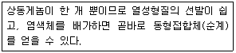
- 반수체
- 동질3배체
- 동질4배체
- 복2배체
(정답률: 74%)
37. 다음 중 포장저항성과 관련 있는 것은?
- 진성(진정) 저항성
- 주동유전자 저항성
- 수직 저항성
- 수평 저항성
(정답률: 71%)
38. 다음 중 자가불화합성을 나타내지 않기 때문에 자식률이 매우 높은 것은?
- 양성화
- 자웅이주
- 자가불화합성
- 웅예선숙
(정답률: 67%)
39. 다음 중 ( )에 알맞은 것은?
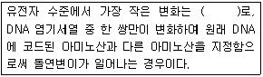
- 다수성돌연변이
- 층치환돌연변이
- 복귀돌연변이
- 점돌연변이
(정답률: 75%)
40. 협의의 유전력이란?
- 표현형분산에 대한 상가적분산의 비율
- 표현형분산에 대한 우성효과분산의 비율
- 유전분산에 대한 상가적분산의 비율
- 유전분산에 대한 우성효과분산의 비율
(정답률: 44%)
3과목: 재배원론
41. 혼파의 장점에 해당하지 않는 것은?
- 영양상의 이점
- 파종작업의 편리
- 공간의 효율적 이용
- 질소질 비료의 절약
(정답률: 51%)
42. 작물이 영양 발육단계로부터 생식 발육단계로 이행하여 화성을 유도하는 주요요인이 아닌 것은?
- C/N율
- T/R율
- 일장조건
- 온도조건
(정답률: 58%)
43. 작물의 내건성에 대하여 가장 올바르게 설명한 것은?
- 잎의 표피에 기공수가 많다.
- 잎이 작고 왜소한 식물이 내건성이 크다.
- 저수능력이 작고, 근군이 표층에 많이 분포한다.
- 건조할 때에 증산작용이 크다.
(정답률: 76%)
44. 화본과 작물이 아닌 것은?
- 옥수수
- 귀리
- 수수
- 알팔파
(정답률: 64%)
45. 종묘로 이용되는 기관이 맞게 연결된 것은?
- 덩이뿌리 – 다알리아, 감자, 뚱딴지
- 덩이줄기 – 감자, 토란. 마늘
- 비늘줄기 – 마늘, 백합, 생강
- 땅속줄기 – 생강, 박하, 호프
(정답률: 61%)
46. 종자의 순도가 90%, 100립중이 20g. 수분함량이 15%, 발아율이 80%일 때 종자의 진가(용가)는?
- 13.5
- 18
- 30
- 72
(정답률: 50%)
47. 작물야생종의 분포를 고고학, 역사학 및 언어학적 고찰을 통하여 재배식물의 기원지를 추정한 사람은?
- De Candolle
- Vavilov
- Allen
- Peake
(정답률: 60%)
48. 방사선 중 가장 현저한 생물적 효과를 갖고 있는 것은?
- 50Fe
- α선
- β선
- γ선
(정답률: 74%)
49. 주심(珠心)이 발달하여 형성된 것으로 양분을 저장하는 것은?
- 배
- 배유
- 외배유
- 자엽
(정답률: 37%)
50. 작물에 요소를 엽면시비할 때 알맞은 농도는?
- 1% 정도
- 3% 정도
- 5% 정도
- 7% 정도
(정답률: 63%)
51. 여러 가지 잡초의 해작용 중에서 유해물질의 분비로 인한 피해란?
- 잡초와 작물과의 양분 경쟁에 의한 피해
- 목초지에서 유해한 잡초로 인한 가축의 피해
- 잡초의 뿌리로부터 분비되는 물질로 인한 피해
- 잡초에 기생하는 병해충이 분비하는 유해물질에 의한 피해
(정답률: 63%)
52. 다음 중 방사선량의 단위로 사용되지 않는 것은?
- cpm
- rhm
- rad
- rep
(정답률: 53%)
53. 식물의 필수원소 중의 하나인 붕소가 결핍되었을 때 식물에 나타나는 특징적인 증상은?
- 분열조직에 괴사가 일어나고 사과의 축과병과 같은 병해를 일으키며 수정, 결실이 나빠진다.
- 생장점이 말라죽고 줄기가 약해지며 잎의 끝이나 둘레가 황화되고, 심하면 아랫잎이 떨어진다.
- 생육초기에 뿌리의 발육이 나빠지고 잎이 암녹색 이 되어 둘레에 점이 생기며, 심하게 결핍되면 잎이 황색으로 변한다.
- 황백화 현상이 일어나고 줄기나 뿌리에 있는 생장점의 발육이 나빠지며 식물체내의 탄수화물이 감소하며 종자의 성숙이 나빠진다.
(정답률: 56%)
54. 작물의 일반분류에서 잡곡에 해당하지 않는 것은?
- 기장
- 귀리
- 수수
- 옥수수
(정답률: 64%)
55. 식물이 주로 이용하는 토양의 수분 형태는?
- 결합수
- 중력수
- 흡습수
- 모관수
(정답률: 72%)
56. 내염재배(耐鹽栽培)에 해당하지 않는 것은?
- 환수(換水)
- 황산근 비료 시용
- 내염성품종의 선택
- 조기재배·휴립재배
(정답률: 60%)
57. 전 세계로부터 수집한 작물의 연구를 통해서 다양성에 주목하였으며, 모든 Linne종은 아종과 변종으로 구성되어 있으며, 또한 변종은 형태적 생태적인 특성이 다른 많은 계통으로 구성되었다고 한 사람은?
- Camerarius
- Linne
- Mendel
- Vavilov
(정답률: 46%)
58. 과실 낙과방지 방법으로 틀린 것은?
- 옥신(auxin)을 살포한다.
- 질소질 비료를 다소 부족하게 시용한다.
- 관개, 멀칭 등으로 토양 건조를 방지한다.
- 주품종과 친화성이 있는 수분수를 20~30% 혼식한다.
(정답률: 53%)
59. 개량 삼포식 농업에서 휴한기에 재배하는 작물은?
- 화곡류 작물
- 화본과 목초
- 콩과 목초
- 채소류 작물
(정답률: 71%)
60. 벼에서 나타나는 냉해를 지연형 냉해와 장해형 냉해로 구분하는 가장 큰 이유는?
- 냉해를 일으키는 원인이 다르기 때문이다.
- 냉해를 일으키는 원인과 피해정도라 다르기 때문이다.
- 벼의 품종에 따라 냉해의 양상이 뚜렷하게 구분되기 때문이다.
- 냉해를 입는 벼의 생육시기와 피해양상 및 정도가 다르기 때문이다.
(정답률: 64%)
4과목: 식물보호학
61. 파이토플라스마에 의한 병으로만 짝지어진 것은?
- 벼 오갈병, 대추나무 빗자루병
- 뽕나무 오갈병, 오동나무 빗자루병
- 붉나무 빗자루병, 벚나무 빗자루병
- 벚나무 빗자루병, 대추나무 빗자루병
(정답률: 52%)
62. 자낭균이 형성하는 자낭각이 공과 같이 막혀 있어 부서지면서 자낭포자를 방출하는 형태의 것은?
- 자낭반
- 자낭구
- 자낭각
- 자낭자좌
(정답률: 71%)
63. 희석살포용 제형 중에서 고형제제인 것은?
- 유제
- 액제
- 수화제
- 액상수화제
(정답률: 65%)
64. 유충과 성충이 모두 작물을 갉아먹어 피해를 주는 것은?
- 벼룩잎벌레
- 고자리파리
- 배추흰나비
- 담배거세미나방
(정답률: 49%)
65. 병든 식물에서 호흡의 변화에 대한 설명으로 옳지 않은 것은?
- 병든 식물의 호흡률은 일반적으로 증가한다.
- 감수성 품종에 비해 저항성 품종에서는 호흡이 감소한다.
- 병든 식물의 호흡증가는 대사작용의 증가 때문이다.
- 병든 식물의 호흡증가는 산화적 인산화반응의 해리에 의해 발생한다.
(정답률: 52%)
66. 우리나라 논 잡초의 군락형성에 있어서 다년생 잡초가 증가되는 가장 직접적인 요인은?
- 시비량의 증가 등에 의한 재배법의 법칙
- 동일 제초제의 연용처리에 의한 논잡초의 초종변화
- 경운이나 정지법의 변화에 따른 추경 및 춘경의 감소
- 조기이식 및 답리작의 감소, 조숙품종의 도입 등 재배시기의 변동
(정답률: 78%)
67. 원제의 성질이 지용성으로 물에 잘 녹지 않을 때 유기용매에 녹여 유화제를 첨가한 용약으로 사용할 때 많은 양의 물에 희석하여 액제 상태로 분무하는 제형은?
- 액제
- 입제
- 분제
- 유제
(정답률: 59%)
68. 이화명나방에 대한 설명으로 옳은 것은?
- 연 1회 발생한다.
- 수십 개의 알을 따로따로 하나씩 낳는다.
- 주로 볏짚 속에서 성충 형태로 월동한다.
- 잎집을 가해한 후 줄기 속으로 먹어 들어간다.
(정답률: 61%)
69. 병원균에 침해받은 부위가 비정상적으로 커지는 병은?
- 고구마 무름병
- 배추 무사마귀병
- 오이 덩굴쪼김병
- 사과나무 점무늬병
(정답률: 74%)
70. 프로피 수화제 20L에 약량 20g을 희석하고자 할 때 희석배수는?
- 100배
- 500배
- 1000배
- 2000배
(정답률: 78%)
71. 계면활성제의 사용 용도로 가장 부적합한 것은?
- 유탁제
- 유화제
- 분산제
- 전착제
(정답률: 39%)
72. 파리의 미각 감각기관의 위치는?
- 입틀
- 다리
- 더듬이
- 쌍꼬리
(정답률: 64%)
73. 식물의 재배기간 동안 2차 전염원을 형성하지 않는 병원균은?
- 감자 역병균
- 수박 탄저병균
- 옥수수 깨씨무늬병균
- 배나무 붉은별무늬병균
(정답률: 57%)
74. 곤충의 호흡계에 해당되는 것은?
- 기문
- 침샘
- 기저막
- 말피기관
(정답률: 71%)
75. 우리나라 논에서 설포닐우레아계 제초제에 대해 저항성을 나타내는 논 잡초가 아닌 것은?
- 깨풀
- 마디꽃
- 물달개비
- 올챙이고랭이
(정답률: 42%)
76. 잡초의 생장형에 따른 분류에 있어 생장형과 잡초 종류가 올바르게 연결된 것은?
- 포복형 – 메꽃, 환삼덩굴
- 직립형 – 명아주, 뚝새풀
- 로제트형 – 민들레, 질경이
- 분지형 – 광대나물, 가막사리
(정답률: 64%)
77. 우리나라 논의 대표적인 1년생 광엽잡초로서 주로 종자로 번식하는 것은?
- 벗풀
- 강피
- 쇠털골
- 물달개비
(정답률: 50%)
78. 경엽처리용 제초제에 해당하는 것은?
- 이사-디 액제
- 시마진 수화제
- 뷰타클로르 입제
- 나프로파마이드 유제
(정답률: 56%)
79. 제초제의 살초기작과 관계가 없는 것은?
- 생장 억제
- 광합성 억제
- 신경작용 억제
- 대사작용 억제
(정답률: 70%)
80. 복숭아혹진딧물에 대한 설명으로 옳지 않은 것은?
- 알로 월동한다.
- 바이러스를 매개한다.
- 봄에는 완전변태를 한다.
- 가을철에는 양성생식으로 수정란을 낳고, 여름과 봄에는 단위생식을 한다.
(정답률: 49%)
5과목: 종자관련법규
81. K모씨는 거래용 서류에 품종보호출원 중이 아닌 품종을 품종보호 출원중인 품종인 것 같이 거짓으로 표시하였다. K모씨가 처벌 받는 벌칙기준으로 맞는 것은?
- 6개월 이하의 징역 또는 3백만원 이하의 벌금에 처한다.
- 1년 이하의 징역 또는 5백만원 이하의 벌금에 처한다.
- 2년 이하의 징역 또는 1천만원 이하의 벌금에 처한다.
- 3년 이하의 징역 또는 2천만원 이하의 벌금에 처한다.
(정답률: 54%)
82. 다음 중 ( )에 알맞은 내용은?
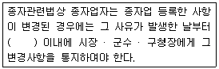
- 30일
- 50일
- 80일
- 100일
(정답률: 75%)
83. 식물신품종보호관련법상 품종보호를 받을 수 있는 요건은?
- 지속성
- 특이성
- 균일성
- 계절성
(정답률: 77%)
84. 다음 중 ( )에 알맞은 내용은?
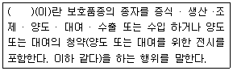
- 실시
- 보호품종
- 육성자
- 품종보호권자
(정답률: 72%)
85. 종자관련법상에서 유통종자의 품질표시 사항으로 틀린 것은?
- 품종의 명칭
- 종자의 포장당 무게 또는 낱알 개수
- 수입 연월 및 수입자명(수입종자의 경우에 해당하며, 국내에서 육성된 품종의 종자를 해외에서 채종하여 수입하는 경우도 포함한다.)
- 종자의 발아율(버섯종균의 경우에는 종균 접종일)
(정답률: 52%)
86. 중자검사요령상 항온 건조기법을 통해 보리 종자의 수분함량을 측정하였다. 수분 측정관과 덮개의 무게가 10g, 건조 전 총무게가 15g이고, 건조 후 총무게가 14g일 때 종자수분함량은 얼마인가?
- 10.0%
- 15.0%
- 20.0%
- 25.0%
(정답률: 62%)
87. 종자산업법상에서 위반한 행위 중 벌칠이 1년 이하의 징역 또는 1천만원 이하의 벌금에 해당하지 않는 것은?
- 보증서를 거짓으로 발급한 종자관리사
- 등록이 취소된 종자업을 계속하거나 영업정지를 받고도 종자업을 계속한 자
- 수입적응성시험을 받지 아니하고 종자를 수입한 자
- 유통종자에 대한 품질표시를 하지 않고 종자를 판매한 자
(정답률: 30%)
88. 종자관련법상 특별한 경우를 제외하고 작물별 보증의 유효기간으로 틀린 것은?
- 채소 : 2년
- 고구마 : 1개월
- 버섯 : 1개월
- 맥류 : 6개월
(정답률: 73%)
89. 보증종자를 판매하거나 보급하려는 자가 종자의 보증과 관련된 검사서류를 보관하지 아니 하면 얼마의 과태료를 부과하는가?
- 1천만원 이하의 과태료
- 2천만원 이하의 과태료
- 3천만원 이하의 과태료
- 5천만원 이하의 과태료
(정답률: 69%)
90. 종자의 수·출입 또는 수입된 종자의 국내 유통을 제한할 수 있는 경우에 해당되지 않는 것은?
- 수입된 종자에 유해한 잡초종자가 농림축산식품부장관 또는 해양수산부장관이 정하여 고시하는 기준 이상으로 포함되어 있는 경우
- 주입된 종자가 국내 종자 가격에 커다란 영향을 미칠 경우
- 수입된 종자의 증식이나 교잡에 의한 유전자 변형 등으로 인하여 농작물 생태계 등 기존의 국내 생태계를 심각하게 파괴할 우려가 있는 경우
- 수입된 종자로부터 생산된 농산물의 특수성분으로 인하여 국민건강에 나쁜 영향을 미칠 우려가 있는 경우
(정답률: 70%)
91. 다음 중 품종명칭으로 등록될 수 있는 것은?
- 1개의 고유한 품종명칭
- 숫자로만 표시하거나 기호를 포함하는 품종명칭
- 해당 품종 또는 해당 품종 수확물의 품질 · 수확량 · 생산시기 · 생산방법 · 사용방법 또는 사용시기로만 표시한 품종명칭
- 해당 품종이 속한 식물의 속 또는 종의 다른 품종의 품종명칭과 같거나 유사하여 오인하거나 혼동할 염려가 있는 품종명칭
(정답률: 69%)
92. 다음 중 ( )에 알맞은 내용은?
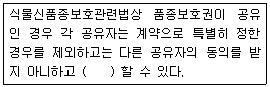
- 공유지분을 양도
- 공유지분을 목적으로 하는 질권을 설정
- 해당 품종보호권에 대한 전용실시권을 설정
- 해당 보호품종을 자신이 실시
(정답률: 51%)
93. 품종보호를 받을 수 있는 권리의 승계에 대한 내용으로 틀린 것은?
- 동일인으로부터 승계한 동일한 품종보호를 받을 수 있는 권리에 대하여 같은 날에 둘 이상의 품종보호 출원이 있는 경우에는 품종보호 출원인 간에 협의하여 정한 자에게만 그 효력이 발생한다.
- 품종보호 출원 전에 해당 품종에 대하여 품종보호를 받을 수 있는 권리를 승계한 자는 그 품종보호의 출원을 하지 아니하는 경우에도 제3자에게 대항할 수 있다.
- 품종보호 출원 후에 품종보호를 받을 수 있는 권리의 승계는 상속이나 그 밖의 일반승계의 경우를 제외하고는 품종보호 출원인이 명의변경 신고를 하지 아니하면 그 효력이 발생하지 아니한다.
- 품종보호를 받을 수 있는 권리의 상속이나 그 밖의 일반승계를 한 경우에는 승계인은 지체 없이 그 취지를 공동부령으로 정하는 바에 따라 농림축산식품부장관 또는 해양수산부장관에게 신고하여야 한다.
(정답률: 68%)
94. 다음 중 종자관리사의 자격기준으로 틀린 것은?
- 종자기사 자격을 취득한 사람으로서 자격 취득 전후의 기간을 포함하여 종자업무에 1년 이상 종사한 사람
- 버섯종균기능사 자격을 취득한 사람으로서 자격취득 전후의 기간을 포함하여 버섯 종균업무에 3년 이상 종사한 사람(버섯 종균을 보증하는 경우에만 해당한다.)
- 종자기술사 자격을 취득한 사람
- 종자산업기사 자격을 취득한 사람으로서 자격 취득 전후의 기간을 포함하여 종자업무와 유사한 업무에 1년이상 종사한 사람
(정답률: 66%)
95. 다음 중 종자업 등록을 하지 않아도 종자를 생산 · 판매할 수 있는 자로 맞는 것은?
- 시·도지사
- 농업계 대학원에서 실험하는 자
- 농업계 전문대학에서 실험하는 자
- 실업계 고등학교 교사
(정답률: 69%)
96. 다음 중 종자를 생산 · 판매하려는 자의 경우에 종자관리사를 두어야 하는 작물은?
- 장미
- 뽕
- 무
- 페튜니아
(정답률: 62%)
97. 식물신품종보호관련법상 품종보호권 또는 전용실시권을 침해한 자는 어떠한 처벌을 받는가?
- 3년 이하의 징역 또는 5백만원 이하의 벌금에 처한다.
- 5년 이하의 징역 또는 1천만원 이하의 벌금에 처한다.
- 7년 이하의 징역 또는 1억원 이하의 벌금에 처한다.
- 9년 이하의 징역 또는 2억원 이하의 벌금에 처한다.
(정답률: 74%)
98. 다음의 종자검사의 검사기준에서 이물로 처리되는 것은?
- 선충에 의한 충영립
- 미숙립
- 발아립
- 소립
(정답률: 72%)
99. 종자관리요강에서 포장검사 및 종자검사의 검사기준 항목 중 백분율을 전체에 대한 개수 비율로 나타내는 항목으로만 짝지어진 것은?
- 정립, 수분
- 정립, 피해립
- 발아율, 수분
- 발아율, 병해립
(정답률: 47%)
100. 다음 중 국가품종목록 등재 대상작물이 아닌 것은?
- 감자
- 보리
- 사료용 옥수수
- 콩
(정답률: 76%)